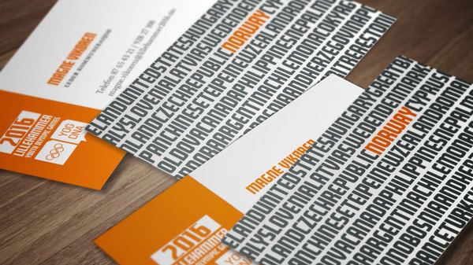
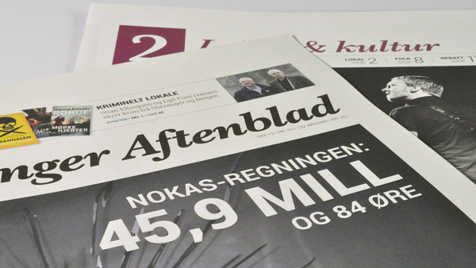
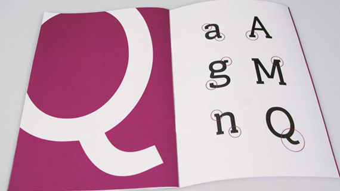
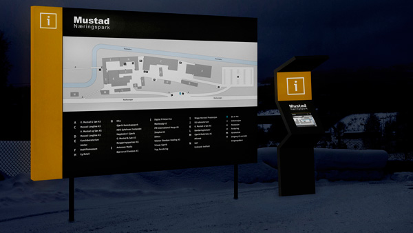
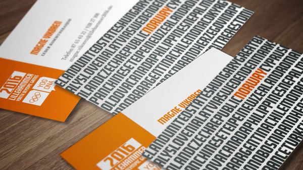
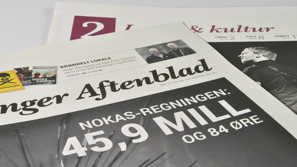
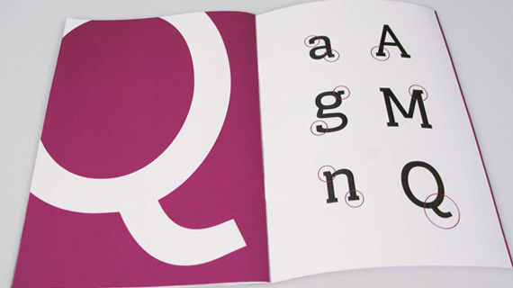
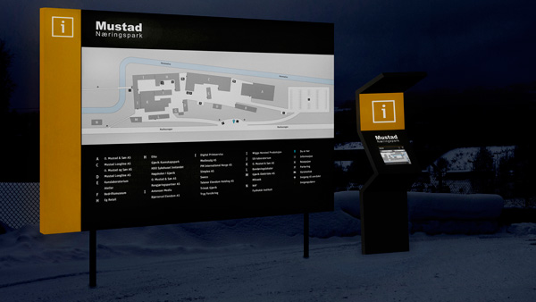

Strategisk design
Trykte medier
Digitale medier
Typografi og skrift
Veifinningssystem
Bacheleor i mediedesign 10 årsjubileum
Bacheleor i Mediedesign ved Høgskolen i Gjøvik feirer 10 årsjubileum, og har i denne annledning samlet en rekke arbeid innen de ulike fagområdene: typografi og skrift, strategisk design, digitale medier, trykte medier og veifinningssystem.
Strategisk design
Trykte medier
Digitale medier
Typografi og skrift
Veifinningssystem
